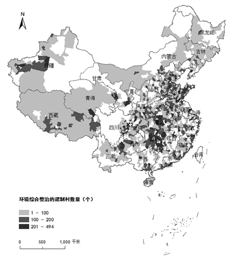
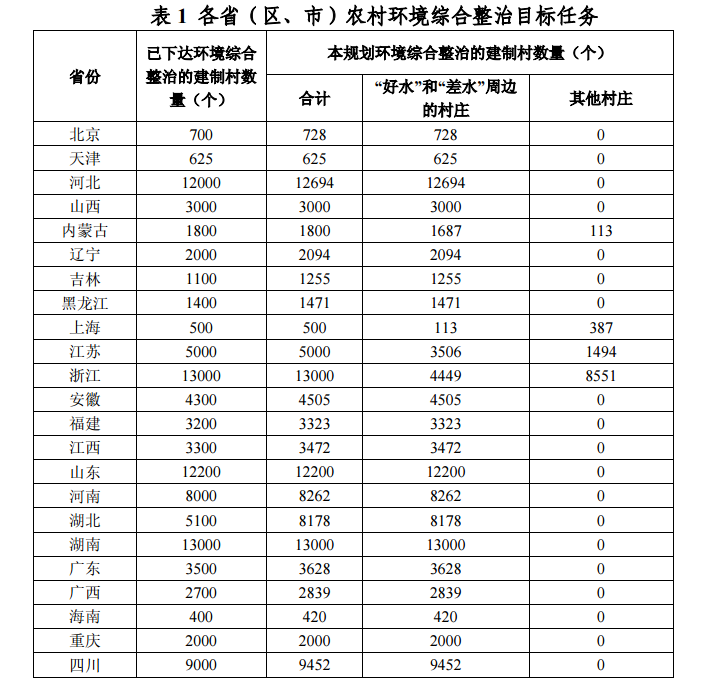
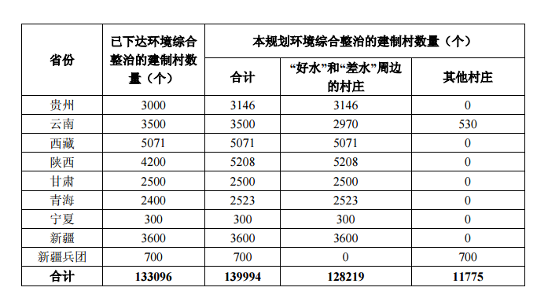
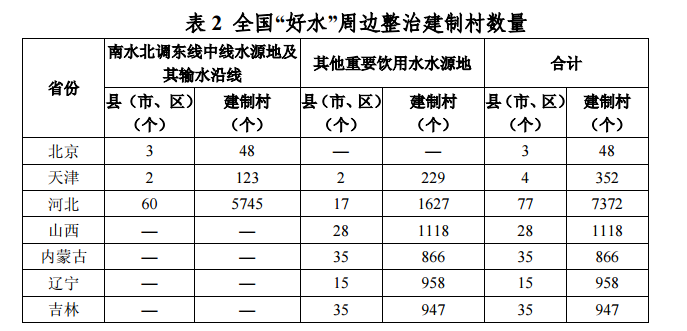
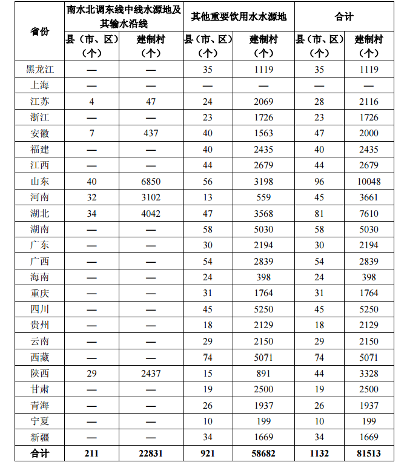
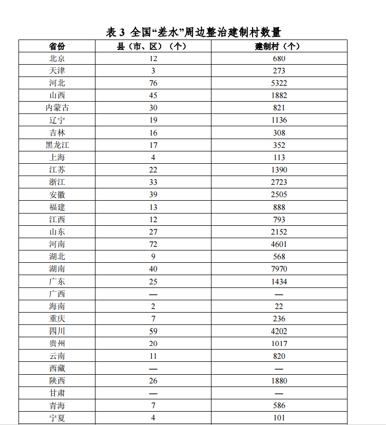
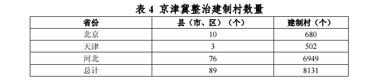
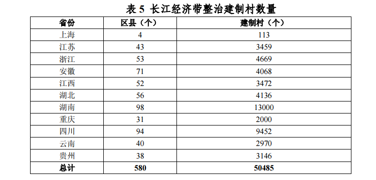

《全国农村环境综合整治“十三五”规划》 |
| 近日，环境保护部环境规划院发布了环境保护部、财政部联合印发《全国农村环境综合整治“十三五”规划》（环水体﹝2017﹞18号）（以下简称《规划》）。 |
| 《规划》明确，到2020年，新增完成环境综合整治的建制村13万个，累计达到全国建制村总数的三分之一以上。建立健全农村环保长效机制，整治过的7.8万个建制村的环境不断改善，确保已建农村环保设施长期稳定运行。引导、示范和带动全国更多建制村开展环境综合整治。全国农村饮用水水源地保护得到加强，农村生活污水和垃圾处理、畜禽养殖污染防治水平显著提高，农村人居环境明显改善，农村环境监管能力和农民群众环保意识明显增强。 |
| 结合水质改善要求和国家重大战略部署，“十三五”期间，全国农村环境综合整治重点为“好水”和“差水”周边的村庄，涉及1805个县（市、区）12.82万个建制村，约占全国整治任务的92%；其中，涉及国家扶贫开发工作重点县284个2.46万个建制村，约占全国整治任务的18%。农村环境综合整治主要任务包括农村饮用水水源地保护、农村生活垃圾和污水处理、畜禽养殖废弃物资源化利用和污染防治。 |
| 针对污染治理设施建成后运行难的突出问题，《规划》提出，各地要认真落实环境保护部、财政部印发的《关于加强“以奖促治”农村环境基础设施运行管理的意见》，结合各地实际，明确设施管理主体、建立资金保障机制、加强管护队伍建设、建立监督管理机制，切实保证设施“建成一个、运行一个、见效一个”。各省级环保部门要会同财政部门于2017年底前完成对已建成设施运行情况的排查，对设施不能正常运行的，要提出限期整改要求，逾期未整改到位的，应通报批评或约谈相关领导，切实保障污染治理设施发挥作用。对新建污染治理设施，省级环保部门应会同财政部门要求县级人民政府出具环保设施运行维护资金来源的承诺函，并把承诺函作为农村节能减排资金安排的前置条件，运行维护资金没有保障的，不得安排资金和项目 |
|  |
| 一、农村环境形势 |
| (一)工作进展 |
| 近年来，环境保护部、财政部认真落实党中央、国务院关于农村环境保护工作的决策部署，不断深化“以奖促治”政策，强化组织领导，注重规划引领，加大监督考核，指导和推动各地开展农村环境综合整治。地方各级政府和相关部门创新体制机制，完善政策措施，狠抓项目建设和管理，农村环境综合整治取得明显成效。 |
| 一是一大批农村突出环境问题得到解决。截至2015年底，中央财政累计安排农村环保专项资金(农村节能减排资金)315亿元，支持全国7.8万个建制村开展环境综合整治，占全国建制村总数的13%。各地设臵饮用水水源防护设施3800多公里，拆除饮用水水源地排污口3400多处;建成生活垃圾收集、转运、处理设施450多万个(辆)，生活污水处理设施24.8万套，畜禽养殖污染治理设施14万套，生活垃圾、生活污水和畜禽粪便年处理量分别达2770万吨、7亿吨和3040多万吨，化学需氧量和氨氮年减排量分别达95万吨和7万吨。整治后的村庄环境“脏乱差”问题得到有效解决，环境面貌焕然一新。通过实施“以奖促治”政策，带动相关部门和地方加大农村环境整治力度，目前，全国60%的建制村生活垃圾得到处理，22%的建制村生活污水得到处理，畜禽养殖废弃物综合利用率近60% |
| 二是农村环保体制机制逐步建立。出台了一系列农村环保政策和技术文件，国务院办公厅印发《关于改善农村人居环境的指导意见》，环境保护部、财政部等部门制定实施《全国农村环境综合整治“十二五”规划》《关于加强“以奖促治”农村环境基础设施运行管理的意见》《中央农村节能减排资金使用管理办法》《培育发展农业面源污染治理、农村污水垃圾处理市场主体方案》。环境保护部发布了有关农村生活污染防治、饮用水水源地环境保护等技术指南和规范。全国三分之二以上的省份建立了农村环保工作推进机制，成立领导小组，出台加强农村环境保护的意见，制定规划或实施方案，明确农村环境保护目标任务和措施。在中央财政资金引导下，有关地方按照“渠道不乱、用途不变、统筹安排、形成合力”的原则，整合相关涉农资金，集中投向农村环境整治区域，提高村庄环境整治成效。 |
| 三是农村环境监管能力得到提升。基层环保机构和队伍得到加强，2014年全国乡镇环保机构数量2968个，约占全国乡镇总数的10%，比2010年的1892个增加了60%;乡镇环保机构人员11900多人，比2010年的7100多人增加了68%。推进环境监测、执法、宣传“三下乡”。环境保护部出台了《关于加强农村环境监测工作的指导意见》，开展农村环境质量监测试点工作，累计监测村庄数量约5200村次。开展农村集中式饮用水水源地保护、生活垃圾和污水处理、秸秆焚烧、畜禽养殖污染防治等专项执法检查行动。采取多种形式宣传农村环保政策、工作进展和典型经验，普及农村环保知识，农民环保意识得到提升。累计举办14期全国乡镇领导干部农村环保培训班，共有1400多名乡镇领导干部和地方环保管理人员参加培训，农村环境管理能力和项目实施水平得到提高。 |
| 四是农村环保惠农取得积极成效。各地结合农村环境综合整治工作，积极推广化肥农药减量控害增效技术，发展清洁、循环、生态的种养模式，推进农作物秸秆、畜禽粪便等农村有机废弃物综合利用，发展农家乐和乡村旅游，促进了环境保护、农业增产、农民增收的共赢。筛选推广农村环保实用技术，鼓励高校、科研院所、企业参与治理工程设计、项目建设和运行维护，带动了环保产业的发展。农村环境综合整治有力促进了生态乡镇、生态村建设，使示范地区环境质量不断改善，农村经济快速发展，党群关系、干群关系更加融洽。全国已有4590多个国家级生态乡镇，成为当地经济、社会与环境协调发展的典范，夯实了农村生态文明建设的基础。 |
| (二)主要问题 |
| 当前，随着我国工业化、城镇化和农业现代化进程不断加快，人口持续增加，农村环境形势严峻，问题依然突出，主要包括： |
| 一是农村环保基础设施仍严重不足。目前，我国仍有40%的建制村没有垃圾收集处理设施，78%的建制村未建设污水处理设施，40%的畜禽养殖废弃物未得到资源化利用或无害化处理，农村环境“脏乱差”问题依然突出。38%的农村饮用水水源地未划定保护区(或保护范围)，49%未规范设臵警示标志，一些地方农村饮用水水源存在安全隐患。 |
| 二是农村环保体制机制仍有待完善。一些地方政府尚未建立起农村环境综合整治工作的有效推进机制。责任分工不明确，治理措施不具体，资金投入不到位，工作部署不落实。各地在推进农村环境综合整治中，主要依靠行政推动，农民群众主体作用未得到充分发挥。农村环境治理市场化机制亟待建立，社会资本参与度不高。一些地方的农村环保设施建成后，存在着管理主体不明确、设施运行维护资金不落实、运行管护人员不足、规章制度不健全等问题，导致一些设施不能正常运行，影响农村环境整治成效。 |
| 三是农村环保监管能力仍然薄弱。目前，地方各级环保部门农村环保工作力量非常薄弱，约90%的乡镇没有专门的环保工作机构和人员，缺乏必要的设备装备和能力，难以保证有效开展工作。农村环保标准体系不健全，农村生活污水处理污染物排放标准、农村生活垃圾处理处臵技术规范等亟待制定。农村环境监测尚未全面开展，无法及时掌握农村环境质量状况和变化情况。 |
| 二、指导思想、基本原则和目标 |
| (一)指导思想 |
| 全面贯彻党的十八大和十八届三中、四中、五中、六中全会精神，牢固树立和贯彻落实创新、协调、绿色、开放、共享的发展理念，按照党中央、国务院关于农村环境保护的决策部署，结合推进农业供给侧结构性改革，深入实施“以奖促治”政策，完善农村环境保护机制，着力解决群众反映强烈的农村突出环境问题，改善农村人居环境，提升农村生态文明建设水平。 |
| (二)基本原则 |
| ——突出重点，统筹兼顾。优先解决农民群众最关心、最直接、最现实的突出环境问题，整治重点为“好水”和“差水”周边的村庄，重点抓好农村饮用水水源地保护、生活垃圾和污水治理、畜禽养殖污染防治。统筹考虑生产与生活、城市与农村、种植业与养殖业等环境保护工作，做好与秸秆综合利用、农村饮水安全工程、河道整治、村庄绿化等工作的衔接，整合相关资金渠道，提高综合整治成效。加大对革命老区、民族地区、边疆地区和14个集中连片特困地区的支持。 ——因地制宜，分类指导。坚持从实际出发，综合考虑村庄布局、人口规模、环境状况、自然条件、经济水平等因素，科学选取治理技术和模式。坚持以“用”为核心，把综合利用作为解决农村环境问题的根本途径，让农民在“用”的过程中受益，在受益的同时履行应当履行的环保责任。 ——创新机制，市场运作。结合国家生态文明体制改革的总体要求，不断完善农村环保体制机制建设，创新政策措施，防止简单照搬城市和工业污染防治的做法。积极培育发展农业面源污染治理、农村生活垃圾污水处理市场主体，探索农村环保设施规模化、专业化、社会化的运营机制，确保设施建成一个、运行一个、见效一个。 ——政府主导，依靠群众。地方各级政府，特别是县级政府，是改善本行政区域内农村环境质量的责任主体，要做好规划编制、资金保障、设施建设、运行管理和监督考核等工作。充分发挥农民群众的主体作用，鼓励和引导农民群众积极参与农村环境综合整治，持续改善农村环境质量。 |
| (三)规划目标 |
| 到2020年，新增完成环境综合整治的建制村13万个，累计达到全国建制村总数的三分之一以上。建立健全农村环保长效机制，整治过的7.8万个建制村的环境不断改善，确保已建农村环保设施长期稳定运行。引导、示范和带动全国更多建制村开展环境综合整治。全国农村饮用水水源地保护得到加强，农村生活污水和垃圾处理、畜禽养殖污染防治水平显著提高，农村人居环境明显改善，农村环境监管能力和农民群众环保意识明显增强。 |
| 三、重点整治区域(一)总体布局 |
| 结合水质改善要求和国家重大战略部署，“十三五”期间，全国农村环境综合整治范围涉及各省(区、市)的14万个建制村(见表1)。整治重点为“好水”和“差水”周边的村庄，涉及1805个县(市、区)12.82万个建制村，约占全国整治任务的92%;其中，涉及国家扶贫开发工作重点县284个2.46万个建制村，约占全国整治任务的18%。 |
|  |
|  |
| 各省（区、市）重点整治区域及建制村数量见附表。附表所列的乡镇名单和建制村数量是指导性的，各省（区、市）可根据实际情况，在确保完成环境综合整治建制村总数的前提下，可对每个县（市、区）的乡镇名单和建制村数量作适当调整。 |
| 重点整治范围1.“好水”周边整治村庄范围包括南水北调东线中线水源地及其输水沿线，以及其他重要饮用水水源地涉及的村庄，涉及 1132 个县（市、区）的 8.15 万个建制村(见表 2)，约占全国整治任务的 58%。 |
|  |
|  |
| 2.“差水”周边整治村庄范围包括 343 个水质需改善控制单元范围内的村庄，涉及 673 个县（市、区）的 4.67 万个建制村(见表 3)，约占全国整治任务的34%。 |
|  |
| （三）优先整治区域 |
| 南水北调东线中线水源地及其输水沿线、京津冀和长江经济带三大区域为优先整治区域，涉及 880 个县（市、区）8.14 万个建制村，约占全国整治任务的 58%。 |
| 南水北调东线中线水源地及其输水沿线南水北调东线中线水源地及其输水沿线涉及 211 个县（市、区）2.28 万个建制村(见表 2)，约占全国整治任务的 16%。 |
| 2.京津冀区域包括密云水库、官厅水库、于桥水库等重要饮用水水源地和63 个水质需改善控制单元范围内的村庄，涉及 89 个县（市、区）8131 个建制村(见表 4)，约占全国整治任务的 6%。 |
|  |
| 3.长江经济带 包括三峡库区及其上游和鄱阳湖、洞庭湖、抚仙湖、洱海等重要饮用水水源地，以及145个水质需改善控制单元范围内的村庄，涉及580个县(市、区)5.05万个建制村(见表5)，约占全国整治任务的36%。 |
|  |
| 四、主要任务 |
| “十三五”期间，农村环境综合整治主要任务包括农村饮用水水源地保护、农村生活垃圾和污水处理、畜禽养殖废弃物资源化利用和污染防治。 |
| (一)农村饮用水水源地保护 |
| 1.建设内容 |
| 在饮用水水源周边设立警示标志、建设防护带和截污设施，依法拆除排污口，开展水源地生态修复等。 |
| 2.主要措施 |
| 加快农村饮用水水源保护区或保护范围划定工作。开展农村饮用水水源地环境状况调查评估工作，以供水人口多、环境敏感的农村饮用水水源地为重点，加快划定水源保护区或保护范围。对供水人口在1000人以上的集中式饮用水水源地，科学编码并划定水源保护区。对供水人口小于1000人的饮用水水源地，应按照国家有关技术规定划定保护范围。 加大农村饮用水水源地环境监管力度。地方各级环保部门要开展专项执法检查，依法取缔农村集中式饮用水水源保护区内的排污口;按照《全国农村环境质量试点监测工作方案》要求，开展农村饮用水水源水质监测;制定农村饮用水水源保护区突发环境事件应急预案，强化污染事故预防、预警和应急处理。统筹城乡供水一体化，建设一批优质饮用水水源地，取缔一批劣质饮用水水源地。 |
| 开展水源地环境整治。地方各级环保部门要对可能影响农村饮用水水源地环境安全的化工、造纸、冶炼、制药等重点行业、重点污染源，加强环境执法监管和风险防范。优先治理农村饮用水水源地周边的生活污水、生活垃圾、畜禽养殖和农业面源污染，消除影响水源水质的污染隐患。 |
| (二)农村生活垃圾和污水处理 |
| 1.建设内容 |
| 重点在村庄密度较高、人口较多的地区，开展农村生活垃圾和污水污染治理。主要建设内容包括：(1)生活垃圾分类、收集、转运和处理设施建设，包括垃圾箱、垃圾池等收集设施，垃圾转运站、运输车辆等转运设施，以及生活垃圾无害化处理设施。(2)生活污水处理设施建设，包括污水收集管网、集中式污水处理设施或人工湿地、氧化塘等分散式处理设施。经过整治的村庄，生活垃圾定点存放清运率达到100%，生活垃圾无害化处理率≥70%，生活污水处理率≥60%。 |
| 2.主要措施 |
| 推进县域农村环保设施统一规划、建设和管理。以县级行政区为单元，实行农村生活垃圾和污水处理统一规划、统一建设、统一管理，有条件的地区积极推进城镇垃圾和污水处理设施和服务向农村延伸。鼓励在县级层面统一招投标，确定项目设计单位、施工单位和监理单位，吸引有信誉、有实力、较大规模的环保企业参与设施建设和运行管理，提高生活垃圾和污水处理水平。 |
| 因地制宜选取农村生活和垃圾污水治理技术和模式。各地在选取农村环保实用技术时，要根据村庄的人口密度、地形地貌、气候类型、经济条件等因素合理确定技术模式;既要考虑建设成本，更要考虑运行维护成本;处理好技术实用性和技术统一性的关系，避免技术“多而杂、散而乱”。建立村庄保洁制度，推行垃圾就地分类减量和资源回收利用，推进农村生活垃圾减量化、资源化、无害化。加快建立分类投放、分类收集、分类运输、分类处理的垃圾处理系统，形成以法治为基础、政府推动、全民参与、城乡统筹、因地制宜的垃圾分类制度，努力提高垃圾分类制度覆盖范围。交通便利且转运距离较近的村庄，生活垃圾可按照“户分类、村收集、镇转运、县处理”的方式处理;其他村庄的生活垃圾可通过适当方式就近处理。离城镇较近的村庄，污水可通过管网纳入城镇污水处理设施进行处理;离城镇较远且人口较多的村庄，可建设污水集中处理设施;人口较少的村庄可建设人工湿地、氧化塘等分散式污水处理设施。 切实保障污染治理设施长效运行。各地要认真落实环境保护部、财政部印发的《关于加强“以奖促治”农村环境基础设施运行管理的意见》，结合各地实际，明确设施管理主体、建立资金保障机制、加强管护队伍建设、建立监督管理机制，切实保证设施“建成一个、运行一个、见效一个”。各省级环保部门要会同财政部门于2017年底前完成对已建成设施运行情况的排查，对设施不能正常运行的，要提出限期整改要求，逾期未整改到位的，应通报批评或约谈相关领导，切实保障污染治理设施发挥作用。对新建污染治理设施，省级环保部门应会同财政部门要求县级人民政府出具环保设施运行维护资金来源的承诺函，并把承诺函作为农村节能减排资金安排的前臵条件，运行维护资金没有保障的，不得安排资金和项目。 |
| (三)畜禽养殖废弃物资源化利用和污染防治 |
| 1.建设内容 |
| 坚持政府支持、企业主体、市场化运作的方针，以沼气和生物天然气为主要处理方向，以就地就近用于农村能源和农用有机肥为主要使用方向，在畜禽养殖量大、环境问题突出的地区，开展区域或县域畜禽养殖废弃物资源化利用和污染治理。建设堆肥、沼气、生物天然气、有机肥等废弃物资源化利用设施和养殖废水处理设施。经过整治的村庄，畜禽养殖废弃物得到有效处理，畜禽粪便综合利用率≥70%。 |
| 2.主要措施 |
| 完成畜禽养殖禁养区划定和整治。按照《水污染防治行动计划》和《畜禽养殖禁养区划定技术指南》的要求，各地要依法按时完成禁养区划定。地方环保部门要配合有关部门，积极推动当地政府完成禁养区内确需关闭或搬迁的养殖场(小区)的关闭和搬迁。 科学选取资源化利用技术和模式。对规模化畜禽养殖场(小区)，周边消纳土地充足的，以沼气发酵、沼液沼渣还田、堆肥、生产有机肥等方式，推广农牧结合、种养平衡模式;对消纳土地不足的，要强化工程处理措施，粪污应优先进行干湿分离，固体部分用于生产有机肥，液体部分综合利用或经处理后达标排放。鼓励规模化畜禽养殖企业将周边养殖密集区及散养户畜禽养殖废弃物一体化、无害化集中处臵。对于养殖密集区域，县级环保部门要配合有关部门推动县级人民政府，采用政府组织、企业牵头、农民参与的模式，统筹考虑人畜粪便、生活污水和垃圾、秸秆等废弃物，推动建立农村有机废弃物收集-转化-利用三级网络体系。结合生态农业建设、化肥农药使用量零增长行动、耕地质量保护与提升行动、土壤有机质提升奖励政策等，引导农民增施有机肥。 |
| 加强畜禽养殖业环境监管。加强源头控制，严格畜禽养殖场(小区)建设项目的环保审批。新建、改建、扩建的规模化畜禽养殖场(小区)要严格执行环境影响评价制度。根据行政区域内环境敏感点和环境质量改善要求，明确养殖场(小区)选址要求和应采取的环保措施。逐步将设有排污口的规模化畜禽养殖场(小区)纳入排污许可证管理。强化畜禽养殖污染物减排，将畜禽废弃物资源化利用量纳入总量减排核算。将区域化学需氧量、氨氮、总磷、总氮等水质指标改善程度作为评价区域畜禽养殖污染治理效果的重要内容。加强畜禽养殖业日常环境监管，依法查处违法行为。 |
| 五、保障措施 |
| (一)加强组织领导 |
| 加强协调联动。建立完善国家和地方的上下联动机制，及时掌握和沟通各地农村环境综合整治有关情况，确保农村突出环境问题得到及时发现和解决。各地要建立跨部门联动机制，加强部门协调配合，整合资源，共享信息，形成工作合力。 落实各方责任。财政部、环境保护部确定重点支持的农村环境综合整治省份，加强对资金使用和项目实施情况的监督检查，建立考核奖惩机制。省级环保部门要会同有关部门组织编制本行政区域农村环境综合整治规划或方案;建立完善项目库和技术支撑队伍，加强项目组织实施和绩效评价，加大资金投入，加强涉农资金整合，建立健全农村环保设施运行维护机制。地市级人民政府要加强行政区域内农村环境综合整治工作的指导和监督，督促项目所在县乡政府保障治理设施长效运行。县级人民政府具体负责项目申报和组织实施，以及已建成项目的运行维护;要整合相关涉农资金，鼓励整乡整县推进。乡镇人民政府要切实保障本行政区域项目建设质量和进度。获得资金支持的村镇应当按照政务公开要求，公布资金安排和使用情况、项目实施情况等。项目所在地村庄要引导和组织好群众通过村规民约、投工投劳等形式，参与项目建设和设施运行管理。 |
| (二)加大资金投入 |
| 加大财政资金投入。充分发挥中央农村节能减排资金“种子”资金的作用，引导地方各级财政加大投入。支持有关县(市、区)加大涉农资金整合力度，集中投入农村环境综合整治。发挥政策性金融机构的作用，加大信贷资金支持力度，进一步拓宽农村环保资金来源。 鼓励社会资本投入。通过政府购买服务、政府和社会资本合作(PPP)等形式，推动市场主体加大对农村生活垃圾、污水收集处理等设施建设和运行维护的投入。引入竞争机制和以效付费制度，合理确定建设成本和运行维护价格。鼓励种养结合，支持畜禽养殖废弃物生产有机肥、食用菌等。推动规模化畜禽养殖企业开展污染第三方治理。研究制定相关税收、土地和电价等优惠政策。选取部分县(市、区)，探索农村环保设施规模化、专业化、社会化运营机制。 引导农民积极参与。完善村级公益事业建设一事一议财政奖补机制，激励农民参与农村环境综合整治。建立农村环境综合整治自下而上的民主决策机制，推行项目规划、建设、管理的“村民议村民定、村民建村民管”的实施机制。完善村务公开制度，推行项目公开、合同公开、投资额公开。 规范资金管理。财政部会同环境保护部加强对资金使用情况的监督检查。地方各级财政部门、环保部门要切实加大资金监管，继续实行公示制、报备制等行之有效的制度。各地环保部门要会同有关部门加快建立农村环保“以奖促治”资金项目信息管理系统，实施项目资金动态管理，所有财政资金投入形成的农村环保设施及运行管理情况都要入库管理。 |
| (三)健全体制机制 |
| 建立目标责任制。省级环保部门要推动本级人民政府将国家下达的目标任务逐级分解落实到县级人民政府，明确工作主体，落实工作责任，构建一级抓一级的考核体系，切实把地方政府农村环境保护责任落到实处。 完善农村环境监管体系。结合省以下环保机构监测监察执法垂直管理制度改革，进一步强化基层环境监管执法力量，对具备条件的乡镇及工业聚集区，要加强基层环境执法体系建设，充实人员力量，保障运行经费。建立完善重心下移、力量下沉、保障下倾的环境执法工作机制，加强城乡环境执法统筹。 加强农村环境监测。推进全国农村环境质量试点监测工作，研究提出农村环境监测技术路线，制定农村环境监测技术规范，加快建立农村环境监测网络，建立农村环境监测信息发布制度。开展农村环境综合整治的县(市、区)要做好农村生活污水、规模化畜禽养殖场(小区)废水等处理设施运行情况的监督性监测。 |
| (四)强化科技支撑 |
| 加强科学研究和技术指导。组织高等院校、科研机构、企业和行业协会等，以提高农村和农业废弃物资源化利用水平为导向，对农村环境综合整治关键技术进行攻关。鼓励农村生活污水和垃圾处理技术研发，在不适宜集中开展污染治理的地区，研发环保、经济、实用的小型或家庭式治污技术和设备。制(修)订农村生活污水处理污染物排放标准、农村生活污水污染防治技术政策、畜禽养殖污染防治技术政策等。各地要结合实际，研究制定农村生活污水处理污染物排放、生活垃圾处理和资源化利用、畜禽养殖废弃物资源化利用等地方标准和技术规范。 |
| 加大实用技术推广力度。加快推进农村环保科研成果转化，集成、筛选一批农村生活污水和垃圾处理等实用技术。通过工程示范等方式，推广农村环保实用技术与装备，探索和创新适于农村地区的生活污水和垃圾处理处臵模式。通过组织现场学习、专题培训以及拍摄专题宣传短片等方式，推广农村环保实用技术和装备 |
| (五)严格监督考核 |
| 开展监督检查。省级、地市级环保部门要会同财政部门组织开展对已建成设施的考核验收，对未通过考核验收的，提出整改要求;对通过考核验收的，每年至少开展一次设施运行情况抽查，对抽查中发现的问题，要向县级人民政府提出限期整改要求，逾期未整改到位的，应通报批评或约谈相关领导。县级环保部门(市级环保部门派出机构)要将设施运行管理情况的监督检查纳入日常工作，整合现有机构和人员队伍，确保设施运行维护有人监管、有人监测、有人指导;要会同财政部门对行政区域内所有已建成设施的运行维护情况开展年度检查，将检查情况向县级人民政府报告，对检查中发现的问题，要督促设施管理主体落实整改要求。 |
| 健全奖惩机制。环境保护部会同财政部对各省(区、市)的目标任务完成情况开展评估考核，评估考核结果作为中央农村节能减排资金分配的重要依据。对目标任务完成情况较好的地区，进一步加大资金支持力度;对未按时完成治理目标或完成情况较差的，将根据情况，采取通报批评、核减资金规模、追缴已拨付资金等措施。 |